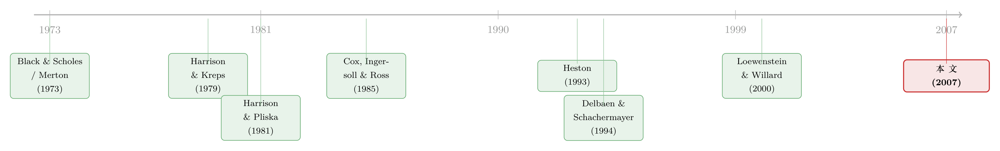

一道方程，几个价格——Black-Scholes 方法里被忽略的「泡沫」
本文读的是 Heston, Loewenstein & Willard (2007, Review of Financial Studies)：Black-Scholes-Merton 的「列出偏微分方程再求解」这套流程，并不能唯一地确定期权价格——同一个偏微分方程 (PDE) 往往有多个满足边界条件的解。多出来的那些解，并非数学瑕疵，而恰恰对应着资产价格里的泡沫、被「占优」的投资、以及（可能根本无法执行的）套利。作者用 CIR、CEV、Heston 三个最经典的模型给出了显式的反例，并给出三条层层递进的条件，告诉你什么时候这些泡沫会被排除掉。
1 引言：一个我们以为早就解决了的问题
每一个学过金融工程的人，都背过同一套口诀：用 Black 和 Scholes (1973) 与 Merton (1973) 的Δ 对冲 (delta-hedging) 论证，构造一个瞬时无风险的组合，于是期权价值必须满足一个偏微分方程；剩下的，就是「解这个 PDE」。教科书把这一步写得云淡风轻——仿佛 PDE 一旦写出，价格就被钉死了。
但本文要问一个让人有点不舒服的问题：解出这个 PDE，你得到的真的只有一个价格吗？
答案是否定的。Δ 对冲只保证了「没有瞬时的无风险利润」，它给出的是一个 PDE；而一个 PDE，配上看似完整的边界条件，仍然可能有不止一个非负解。更要命的是，这些不同的解，对应着复制同一份期权收益、却花费不同成本的交易策略。既然终端收益一模一样、成本却不同，那么必有一个解的回报在到期日「占优 (dominate)」另一个。
这正是全文的张力所在：PDE 方法本身——单凭数学——无法在这些解里挑出「那个对的」。要挑出来，你必须额外引入经济学的判断：哪些交易策略是可行的？什么样的负财富是被允许的？这就是为什么一篇看似纯数学的论文，最后落在了「泡沫」与「套利的极限」上。
让我先把这篇文章的一个核心讲清楚，然后我们一路追下去。
2 一个核心：泡沫，就是两个解之间的那道缝
作者给了一个干净到近乎朴素的定义：
定义 (Asset Pricing Bubble)：一个价格非负的资产，如果存在一个自融资 (self-financing)、路径上财富恒非负的组合，它的成本低于该资产，却在某个固定的未来日期复制出该资产的价格，那么这个资产就含有一个「泡沫 (bubble)」。泡沫的大小，等于资产价格与「最便宜的复制策略成本」之差。
把这句话翻译成本文的语言就是：PDE 的每一个解，都对应一个复制成本；泡沫，就是「某个给定解」与「最便宜的那个非负解」之间的差。
于是逻辑链条就清楚了。多个 PDE 解 ⟹ 复制成本不同 ⟹ 贵的那个解相对便宜的那个含有泡沫 ⟹ 看上去存在一个套利（卖空贵的、买入便宜的复制策略）。但——这里是第一个反转——这个套利未必真的能做。它可能要求你在中途承受无界的浮亏，正是为了排除「翻倍策略 (doubling strategy)」而被各种制度设定挡在门外的那种风险。泡沫能不能被套走，取决于你允许什么样的交易。
接下来，作者不讲空话，直接甩出三个反例。
3 三个反例：泡沫可以长在任何地方
3.1 CIR 利率模型：债券价格上的泡沫
第一个例子用的是 Cox, Ingersoll & Ross (1985) 的利率期限结构模型，并配上一个线性风险溢价。设瞬时无风险利率 \(r\) 在真实测度 \(P\) 下服从
$$dr = \kappa(\theta - r)\,dt + \sigma\sqrt{r}\,dZ,$$
其中 \(\kappa,\theta\) 为正常数，\(Z\) 是 \(P\)-布朗运动。为了让 \(r\) 在有限时间内不会触零，假设
$$2\kappa\theta \ge \sigma^2.$$
风险溢价取线性形式 \(\lambda_0 + \lambda_1 r\)。一张到期支付 1 的贴现债券，其价值 \(G(r,t)\) 满足估值 PDE
$$\tfrac{\sigma^2}{2} r\,G_{rr} + \kappa(\theta-r)\,G_r + G_t - rG = (\lambda_0 + \lambda_1 r)\,G_r,\qquad G(r,T)=1.$$
定义 \(\hat\kappa = \kappa + \lambda_1\)、\(\hat\theta = (\kappa\theta - \lambda_0)/(\kappa+\lambda_1)\)。标准的 CIR 公式 \(G_1(r,t)=A(t)e^{-B(t)r}\) 是一个解。但作者证明：当上面的 \(2\kappa\theta \ge \sigma^2\) 成立、同时
$$2\hat\kappa\hat\theta < \sigma^2$$
时，存在一个更便宜的非负解 \(G_2\)，它在到期日与 \(G_1\) 一致、在到期前却严格小于 \(G_1\)。
这意味着什么？经济直觉非常漂亮：\(G_2\) 可以理解为一张「敲出 (knockout)」债券的价值——只要利率在到期前触零它就支付 0，否则支付 1。于是 \(G_1 - G_2\) 就是「一份在利率触零时支付一美元」的或有索取权的价格。在真实测度 \(P\) 下利率永远碰不到零（原点不可达），但等价（局部）鞅测度 \(Q\) 却给「触零」这个事件赋了正概率、从而赋了正价格。\(P\) 与 \(Q\) 不等价，因为它们对零概率事件的判断不同。于是原始的 CIR 债券价格 \(G_1\) 含有一个有界的泡沫，上界恰好是 1。
这里顺手解决了一桩公案：CIR 当年猜测，只要风险溢价是线性的、\(\lambda_0\neq 0\)，就一定存在套利。本文证明这个猜想并不普遍成立——只要 \(2\hat\kappa\hat\theta \ge \sigma^2\)，CIR 债券价格就是成本最低的非负解，存在使 \(r\) 在 \(P\) 和 \(Q\) 下都不触零的等价鞅测度，套利消失。Cheridito, Filipovic & Kimmel (2003) 在独立的工作中得到了相似的条件，并指出 \(\lambda_0\) 在实证上很重要。
3.2 CEV 模型：股票和期权上的（无界）泡沫
第二个例子更狠。常方差弹性 (constant elasticity of variance, CEV) 模型下，股价过程为
$$dS = rS\,dt + \sigma S^{\alpha}\,dZ^Q,$$
这里 \(r,\sigma\) 为正常数，\(\alpha\) 是方差弹性，作者聚焦于 \(\alpha>1\) 的情形。和 CIR 不同，这里存在一个使瞬时股票回报等于无风险利率的等价局部鞅测度，债券没有泡沫。可即便如此，期权估值 PDE 仍然有多个解。
一份欧式看涨期权到期支付 \(\max(S_T-K,0)\)，其价值满足
$$\tfrac{1}{2}\sigma^2 S^{2\alpha} G_{SS} + rS\,G_S + G_t - rG = 0,$$
边界条件为 \(G(S,T)=\max(S-K,0)\)、\(G(0,t)=0\)、\(G(\infty,t)=\infty\)。Emmanuel & MacBeth (1982)、Schroder (1989) 与 Hull (2003) 给出的解形如
$$G_1(S,t) = S\,p_1(S,t) - e^{-r(T-t)}K\,p_2(S,t).$$
他们误以为这个解就是收益的风险中性折现期望。它不是。作者直接用 CEV 的概率密度积分出真正的风险中性期望，得到一个新公式
$$G_2(S,t) = S\!\left[p_1(S,t) - \frac{\Gamma(v,u)}{\Gamma(v,0)}\right] - e^{-r(T-t)}K\,p_2(S,t),\qquad v=\frac{1}{2(\alpha-1)},$$
其中 \(\Gamma(\cdot,\cdot)\) 是不完全伽马函数。\(G_2\) 满足与公开解完全相同的边界条件，却是真正的风险中性折现收益，也是满足边界条件的最便宜的非负解。
两个解之差
$$G_1 - G_2 = S\,\frac{\Gamma(v,u)}{\Gamma(v,0)}$$
满足 PDE 且终端值为零——这正是 Harrison & Pliska (1981) 所说的「自杀策略 (suicide strategy)」：从一笔正的财富出发，几乎必然在 \(T\) 时刻归零。它的反向头寸，就具有翻倍策略的典型特征：在平仓前冒着无界的浮亏。
几个细节值得停下来体会：
- 即便存在等价局部鞅测度，套利依然存在——但这个套利对一个「不被允许承受无界盯市亏损」的投资者、或者一个「不能卖空股票」的投资者来说，是不可行的。
- 泡沫不只长在期权上，也长在股价上。把 \(K=0\) 代入即得 \(G_1=S\)，于是股价本身就含有泡沫 \(S\,\Gamma(v,u)/\Gamma(v,0)\)，而且这个泡沫是无界的，不像 CIR 例子里那样被 1 顶住。
- 看跌-看涨平价 (put-call parity) 与风险中性定价，二者只能选一个。\(G_1\) 不满足风险中性定价，但若看跌期权按风险中性定价，平价对 \(G_1\) 成立；\(G_2\) 比 \(G_1\) 便宜，所以若看跌和看涨都按风险中性定价，平价就不可能成立。甚至连「行权价趋于无穷时看涨价格趋于零」这条人人默认的性质，对 \(G_1\) 都不成立（极限不是零），对 \(G_2\) 才成立。
（关于「风险到底有没有让期权更值钱」这个看似显然、其实暗藏机关的问题，可参见《「风险让期权更值钱」——这句人人会说的话，其实只对了一半》。）
3.3 Heston 随机波动率：连股票都「干净」，期权却仍有泡沫
第三个例子把刀递到了最深处。在 Heston (1993) 模型里，
$$dS_t = rS_t\,dt + \sqrt{V_t}\,S_t\,dZ^Q_t,\qquad dV_t = \sigma^2\,dt + \sigma\sqrt{V_t}\,dZ^Q_t,$$
方差过程 \(V\) 碰不到零，等价风险中性测度 \(Q\) 按构造存在，债券没有泡沫，折现股价在 \(Q\) 下是鞅、股价也没有泡沫。一切看起来都「乖得不能再乖」。然而作者给出一个简单到惊人的闭式泡沫：
$$\phi(V,t) = \frac{1}{V}\,e^{-r(T-t)-\frac{2V}{\sigma^2(T-t)}}.$$
它满足
$$\tfrac{1}{2}\sigma^2 V\,\phi_{VV} + \sigma^2\,\phi_V + \phi_t - r\phi = 0,\qquad \phi(V,T)=0,$$
又是一个从正财富 \(\phi(V_0,0)>0\) 出发、到 \(T\) 时归零的自杀策略。于是 \(G_2(S,V,t)=G_1(S,V,t)+\phi(V,t)\) 是比 Heston 原公式（或 Grünbichler & Longstaff (1996) 的波动率衍生品公式）更贵的另一个解。
这个例子的杀伤力在于那句结论：股票泡沫在数学上并不是期权泡沫的必要条件。即便股票、债券、货币市场账户三者都有等价局部鞅测度、都没有泡沫，期权价格依然可以长出一个无界的泡沫。「乖巧」的模型，照样会暗藏期权泡沫。
4 模型：把那条「自杀策略」一步步看清楚
前面三个例子里反复出现同一个结构，值得专门停下来推一遍。所有反例的骨架都是：两个解之差 \(\delta \equiv G_1 - G_2\) 满足齐次 PDE，且终端条件为零。
第一步，为什么 \(\delta\) 满足齐次 PDE？因为 \(G_1\) 和 \(G_2\) 都满足同一个线性估值 PDE（带支付项的非齐次项也相同），相减后非齐次项抵消，于是 \(\delta\) 满足去掉收益源后的齐次方程。以 CEV 为例：
$$\tfrac{1}{2}\sigma^2 S^{2\alpha}\,\delta_{SS} + rS\,\delta_S + \delta_t - r\delta = 0,\qquad \delta(S,T)=0.$$
第二步，这个 PDE 的解是什么经济对象？Feynman-Kac 告诉我们，\(\delta\) 是某个自融资交易策略的价值过程：它复制的终端支付是 \(\delta(S,T)=0\)。换句话说，这是一笔「期初价值为正、期末几乎必然变成零」的策略——钱凭空消失了。这正是自杀策略的定义。
第三步，它为什么是「套利」却又「未必可行」？把它反过来做（卖空 \(G_1\) 的复制策略、买入 \(G_2\) 的复制策略），你期初净收入为正、期末净支付为零，看上去是白拿钱。但 \(\delta\) 在中途可以变得任意大（CEV 里当 \(S\to\infty\)、Heston 里当 \(V\to 0\)），意味着反向头寸在平仓前要承受无界的浮亏——这与翻倍策略同病相怜。一旦你给负财富设了下界（比如「盯市亏损不得突破某个固定额度」，这恰是用来排除翻倍策略的标准假设），这笔套利就做不成了（这正是本文 Proposition 4.1 的内容）。
为了把这条主线钉在最核心的方程上，下面用带标注的方式拆开 CEV 的估值 PDE——整篇论文的全部张力，都浓缩在这个看似平平无奇的二阶线性算子里：
要点在于：这个算子是线性的，所以它的解空间允许叠加一个齐次解 \(\delta\)；而 PDE+边界条件不足以把 \(\delta\) 钉成零。要钉成零，你得额外要求「不允许自杀策略 / 翻倍策略」这类经济约束——数学不替你做这个决定。
5 三条层层递进的条件：什么时候泡沫被排除
讲清了泡沫从哪来，自然的问题是：什么条件能保证它不出现？ 作者给出三条嵌套的充要条件，逐级排除不同类型的泡沫，办法是逐级扩大可行套利策略的集合：
- 条件 1：局部风险价格 (local price of risk) 有限——这就是最熟悉的 Black-Scholes-Merton 条件，保证没有瞬时的无风险利润。
- 条件 2：在条件 1 之上，进一步保证存在等价局部鞅测度 (equivalent local martingale measure)（Delbaen & Schachermayer (1994) 意义下），它确保「买入并持有贴现债券 / 货币市场账户」的回报不被占优。CIR 例子违反的正是这一条。
- 条件 3：在前两条之上，检查股价本身的鞅性质，确保股票回报不被占优——它排除股票泡沫。CEV 模型（\(\alpha>1\)）违反的正是这一条。
三条全部满足，就给出了 Harrison & Kreps (1979) 意义下、针对底层资产的等价鞅测度。作者强调，这些条件还能给 Broadie et al. (2000)、Chernov & Ghysels (2000)、Eraker, Johannes & Polson (2003)、Jones (2003) 等人估计的模型，补上一组防止泡沫的参数约束——也就是说，这不是纸上谈兵，而是直接关系到一堆被广泛使用的实证模型「参数估到哪儿才算安全」。
6 反转：泡沫到底重不重要，取决于你允许谁交易
故事到这里其实还没完。第四节是真正的「哲学转折」：泡沫在理论上重不重要，完全取决于「为了排除翻倍策略，你选择了哪一种制度假设」。
- Delbaen & Schachermayer (1994) 的办法是给负财富设下界。在这个设定下，靠卖空股票/期权泡沫去套利，和翻倍策略一样要冒无界的中途亏损——Proposition 4.1 证明这类尝试不可行，于是泡沫模型（包括 CEV）被允许存在。
- Harrison & Kreps (1979) 的办法不同：他们不限制负财富，而是要求策略必须是局部「买入持有」的（所谓「简单 (simple)」策略）。这给出了等价鞅测度、从而排除了 CEV 模型——但代价是，连续复制策略本身也变得不可行，而那恰恰是回报能占优于泡沫资产的那些策略。
换句话说，「有没有泡沫」并不是一个纯粹的数学事实，而是和「你认为现实世界里哪些交易做得成」这件事深度绑定。这也呼应了一整条「套利的极限 (limits of arbitrage)」文献。
而且这套理论预测，惊人地贴合现实证据。作者指出，他们关于「股票泡沫存在时看跌-看涨平价被破坏、其他无套利关系失灵」的理论预测，正好与互联网泡沫时期 dot-com 股票上被记录到的实证违例相吻合——Mitchell, Pulvino & Stafford (2002)、Lamont & Thaler (2003)、Ofek, Richardson & Whitelaw (2003) 都记录过这类现象。理论与实证在这里搭上了桥。
7 文献脉络
把这条线索摊开看，它其实横跨了金融工程与数理金融两个传统。
源头是 Black & Scholes (1973) 和 Merton (1973)：他们用 Δ 对冲把期权定价归结为一个 PDE，开创了整个范式——但也埋下了「PDE 解唯一吗」这个被长期忽略的隐患。第二条支流是 Harrison & Kreps (1979) 与随后的鞅定价理论，把无套利与等价鞅测度的存在联系起来；其顶点是 Delbaen & Schachermayer (1994) 的资产定价基本定理一般版本，以及「等价局部鞅测度」与「等价鞅测度」之间那道微妙的缝。第三条支流是把具体模型（CIR (1985) 的利率、Heston (1993) 的随机波动率、CEV）拿来反复检验的实证传统。
本文站在三条支流的交汇处：它第一次把「PDE 多解」这件纯数学的事，系统地翻译成「泡沫 / 占优投资 / 自杀策略」这套经济语言，并接上了 Loewenstein & Willard (2000) 关于连续交易模型中理性泡沫的工作，以及 Cheridito, Filipovic & Kimmel (2003) 对 CIR 风险价格设定的独立考察。它给出的，是「什么时候该信哪个解」的经济判据。

（这条「从期权价格反推、又被无套利约束钉住」的思路，在后来的实证工作里仍有回响，例如《把未来的概率从期权价格里「读」出来：一个被忽略的无套利约束》；而关于「泡沫」这个词本身有多难定义，可参见《泡沫：一个我们至今定义不清、却又绕不开的词》。）
评论与延伸（Q&A + 研究方向）
(a) 几个可能的疑问
Q：这不就是个「PDE 边界条件没设全」的技术问题吗？补全边界条件不就完了？
不是。本文的要害恰恰是：在这些例子里，多个解满足完全相同的边界条件（\(G(0,t)=0\)、\(G(\infty,t)=\infty\)、终端 payoff 一致）。CEV 里 \(G_1\) 和 \(G_2\) 一字不差地满足同一组条件，却差了一个泡沫。问题不在「边界条件没写够」，而在于「无穷远处的增长行为 / 过程是否会爆炸到无穷」这类全局性质，PDE 加常规边界条件并不能锁死它。要锁死它，得靠经济学的可行性假设。
Q：「等价局部鞅测度」和「等价鞅测度」到底差在哪？为什么这道缝这么关键？
局部鞅未必是真鞅——它可能是一个「严格局部鞅 (strict local martingale)」，期望会随时间漂移下降。Heston 例子里折现股价是真鞅（无股票泡沫），但期权价值过程对应的某些解只是局部鞅；CEV 里折现股价本身就是严格局部鞅，于是股价含泡沫。条件 2 只保证局部鞅测度（排除债券泡沫），条件 3 才进一步要求股价是真鞅（排除股票泡沫）。泡沫，本质上就活在「局部鞅」与「真鞅」之间那道缝里。
Q：既然存在套利，为什么不能直接做？「免费的钱」不该被瞬间套光吗？
因为这些套利共享了翻倍策略的致命特征：平仓前要承受无界的中途浮亏。一旦制度给你的负财富/盯市亏损设了下界（保证金、风控限额、破产约束），策略就无法执行。这也是为什么作者说，「机构往往允许无保证金的备兑看涨 (covered call) 交易」这一现实，本身就在暗示哪些期权解才是「对的」。
Q：CIR 的泡沫有界（≤1），CEV 和 Heston 的泡沫无界，这个差别只是巧合吗？
不是巧合，而是经济性质的反映。CIR 泡沫对应「利率触零」这个有界支付的或有索取权（最多值 1），所以泡沫被 1 顶住。CEV / Heston 的泡沫对应的自杀策略在状态空间边缘（\(S\to\infty\) 或 \(V\to 0\)）可以无限放大，所以泡沫无界。泡沫的「形状」直接由它所复制的那个临界事件的支付结构决定。
Q：这是不是说 Hull 教科书里的 CEV 看涨公式「错了」？
措辞要精确：那个公式 \(G_1\) 确实是估值 PDE 的一个解，也满足边界条件，但它不是收益的风险中性折现期望——Emmanuel-MacBeth 与 Hull 误以为它是。真正的风险中性价格是更便宜的 \(G_2\)。两者都「数学上有效」，差别在于经济解释和你愿意接受哪套交易可行性假设。所以与其说「错」，不如说「它定价的是一个含泡沫的资产」。
Q：CIR 当年的套利猜想被推翻，意味着他们错了吗？
准确地说，是被限定了。CIR 猜测「线性风险溢价 + \(\lambda_0\neq 0\) 永远导致套利」；本文证明只要 \(2\hat\kappa\hat\theta\ge\sigma^2\)，就存在让利率在 \(P\)、\(Q\) 下都不触零的等价鞅测度，套利消失。所以一大片此前被「以为有套利」而弃用的参数，其实是干净可用的——Cheridito et al. (2003) 还证明了这片参数在实证上很重要。
(b) 几个可能的研究问题与提案
1. 公司债里的「严格局部鞅」泡沫
【经济故事】把股票换成公司债：违约边界、可赎回/可回售条款，使得债券价值是底层资产价值的非线性函数，其估值 PDE 同样可能有多解。在高收益债 (high-yield) 这种「股性很强」的品种上，是否存在类似 CEV 的债券价格泡沫，导致「看涨-看跌式」无套利关系（如可转债的平价关系）被系统性破坏？ 【可行性】中。需要可转债 / 可赎回债的逐券价格、对应正股与隐含波动率。识别上可借鉴本文的「两个解之差是否无界」判据，结合 TRACE 成交价检验平价违例。难点在于债市流动性差，浮亏-套利的可行性论证更微妙。
2. 流动性约束如何把「不可行的套利」变成可观测的定价偏差
【经济故事】本文的核心是「泡沫能否被套走取决于负财富下界」。现实里，做市商的风险限额、回购融资约束就是这种下界。当这些约束收紧时，本应被套走的期权泡沫是否会显式地出现在价格里？ 【可行性】高。已有大量「套利的极限」实证范式可借。可用 CDS-bond basis、互换利差转负等事件，把「约束收紧」当作冲击，检验无套利关系的破坏幅度是否随约束强度上升。（与《互换利差为何敢于「转负」：把套利的风险，算进价格里》的思路天然衔接。）
3. 外资持有人与「测度不等价」的跨境版本
【经济故事】本文最深刻的直觉之一是：\(P\) 与 \(Q\) 对「零概率事件」的判断不同，泡沫就藏在这道缝里。跨境投资者面对的尾部事件（资本管制、汇兑冻结）概率判断可能与本地投资者系统性不同。这是否会在跨境定价的衍生品上制造出「本地无泡沫、外资视角有泡沫」的不一致？ 【可行性】中。需要分投资者类型的持仓与跨境衍生品报价。识别难点在于「测度差异」难以直接观测，可能要借助 A/H 双重上市、可投资度变化等准自然实验间接逼近。
4. 把多解判据接进机器学习期权定价器
【经济故事】当下用神经网络/深度代理拟合期权价格的做法，本质上是在拟合 PDE 的「某个」解——但它拟合的是含泡沫的那个，还是最便宜的那个？本文给出的「自杀策略 / 真鞅」判据，可以作为给这类模型加的经济正则项。 【可行性】高。可在 CEV / Heston 这类有解析多解的模型上做受控实验，比较无约束网络与加了「真鞅约束」网络的解，验证后者是否收敛到 \(G_2\)。（与《把结构模型「蒸馏」成一张查找表：深度代理与期权定价》的方法论可对话。）
我的判断
这篇论文的贡献，在我看来不是某个新公式，而是一次认识论上的纠偏：它让「解 PDE」这个被教学惯性磨得发亮的动作重新长出了棱角。它用三个最经典、最被信任的模型（CIR、CEV、Heston）给出显式的多解反例，把抽象的「严格局部鞅」翻译成可触摸的「自杀策略」和「债券触零索取权」，又用三条嵌套条件给实证工作者划出了「参数估到哪儿才安全」的红线，还顺手了结了 CIR 的一桩老猜想。这是少见的、把数学严谨与经济直觉缝得几乎不留痕迹的工作。
对它的保留也正在于此：全文是纯理论的存在性构造，并未提供「现实中这些泡沫到底有多大、出现得多频繁」的实证度量；它对 dot-com 证据的呼应是定性的、事后的类比，而非用模型去校准那段历史的偏差幅度。此外，「哪种制度假设更贴合现实」这个最终决定泡沫是否重要的问题，本文把它摆上了台面，却（合理地）没有替我们回答。
我接下来最想看到的，是把这套「多解 = 泡沫」的判据真正带进数据：在一个约束会收紧、又能观测到约束强度的市场里（公司债、跨境衍生品都是好候选），检验无套利关系的破坏幅度，是否随「负财富下界被绑紧」而单调上升。如果能做到，这篇纯理论的论文，就会变成一把丈量「套利极限」的实证尺子。
参考文献
- Black, F., and M. Scholes (1973). The Pricing of Options and Corporate Liabilities. Journal of Political Economy 81, 637–654.
- Cheridito, P., D. Filipović, and R. L. Kimmel (2003). Market Price of Risk Specifications for Affine Models: Theory and Evidence. Working paper, Princeton University.
- Cox, J. C., J. Ingersoll, and S. A. Ross (1985). A Theory of the Term Structure of Interest Rates. Econometrica 53, 385–407.
- Delbaen, F., and W. Schachermayer (1994). A General Version of the Fundamental Theorem of Asset Pricing. Mathematische Annalen 300, 463–520.
- Emmanuel, D. C., and J. D. MacBeth (1982). Further Results on the Constant Elasticity of Variance Call Option Pricing Model. Journal of Financial and Quantitative Analysis 17, 533–554.
- Harrison, J. M., and D. M. Kreps (1979). Martingales and Arbitrage in Multiperiod Securities Markets. Journal of Economic Theory 20, 381–408.
- Harrison, J. M., and S. R. Pliska (1981). Martingales and Stochastic Integrals in the Theory of Continuous Trading. Stochastic Processes and Their Applications 11, 215–260.
- Heston, S. (1993). A Closed-Form Solution for Options with Stochastic Volatility with Applications to Bond and Currency Options. Review of Financial Studies 6, 327–344.
- Heston, S. L., M. Loewenstein, and G. A. Willard (2007). Options and Bubbles. Review of Financial Studies 20(2), 359–390.
- Lamont, O. A., and R. H. Thaler (2003). Can the Market Add and Subtract? Mispricing in Tech Stock Carve-Outs. Journal of Political Economy 111, 227–268.
- Loewenstein, M., and G. A. Willard (2000). Rational Equilibrium Asset-Pricing Bubbles in Continuous Trading Models. Journal of Economic Theory 91(1), 17–58.
- Merton, R. C. (1973). Theory of Rational Option Pricing. Bell Journal of Economics and Management Science 4, 141–183.
- Mitchell, M., T. Pulvino, and E. Stafford (2002). Limited Arbitrage in Equity Markets. Journal of Finance 57(2), 551–584.
- Ofek, E., M. Richardson, and R. F. Whitelaw (2003). Limited Arbitrage and Short Sales Restrictions. Working paper, New York University.
- Schroder, M. (1989). Computing the Constant Elasticity of Variance Option Pricing Formula. Journal of Finance 44, 211–219.